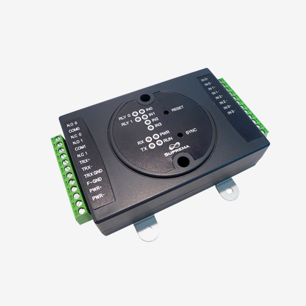

3.1.3 Controlador de Entrada y Salida (E/S)
En computación, la entrada y salida o E/S (en inglés input/output o I/O), es la comunicación entre un sistema de procesamiento de información, tal como un ordenador, y el mundo exterior, posiblemente un humano u otro sistema de procesamiento de información. Los dispositivos de E/S son utilizados por una persona (u otro sistema) para comunicarse con un ordenador. Por ejemplo, un teclado o un ratón puede ser un dispositivo de entrada para un ordenador, mientras que los monitores e impresoras se consideran los dispositivos de salida para un ordenador. Dispositivos para la comunicación entre computadoras, tales como módems y tarjetas de red , por lo general sirven para entrada y salida.
